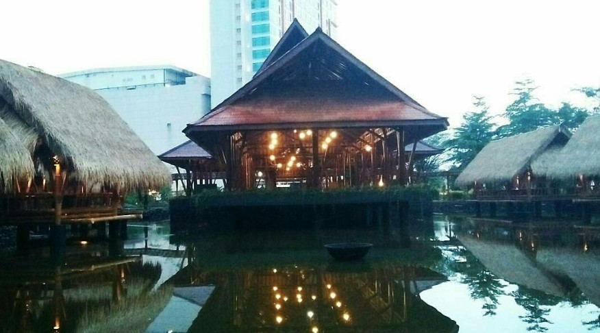
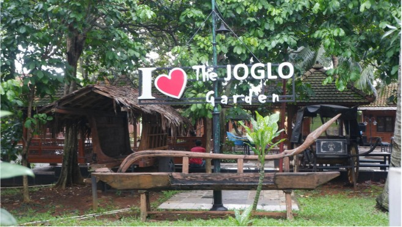
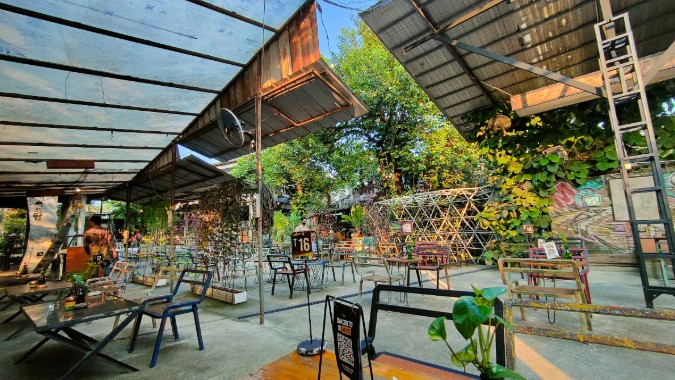
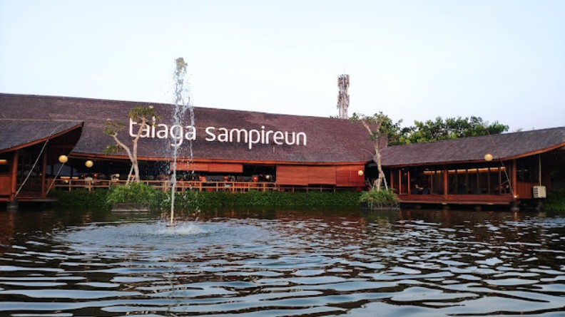
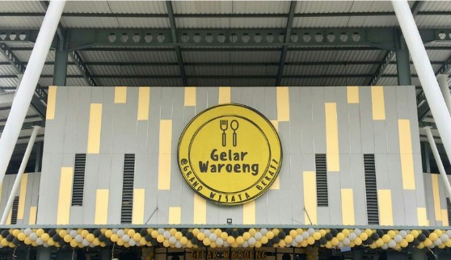
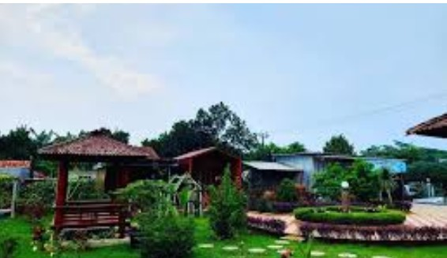

Kabupaten Bekasi
Macam-macam Wisata Kuliner Kita Saat Ini!

Wisata kuliner Mang Engking membawakan suasana alam...

The Joglo Garden memiliki tempat yang unik dengan menggunakan...

Koma Junkyard memiliki konsep kuliner dengan gaya retro yang...

Resto Amanai memiliki konsep alam dengan danau yang cocok...

Terdapat beberapa kuliner dengan harga yang cukup relatif...

Saung Kang Oban memiliki konsep dengan ciri khas sunda seperti...